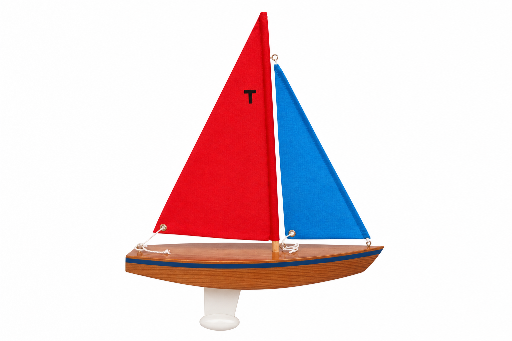
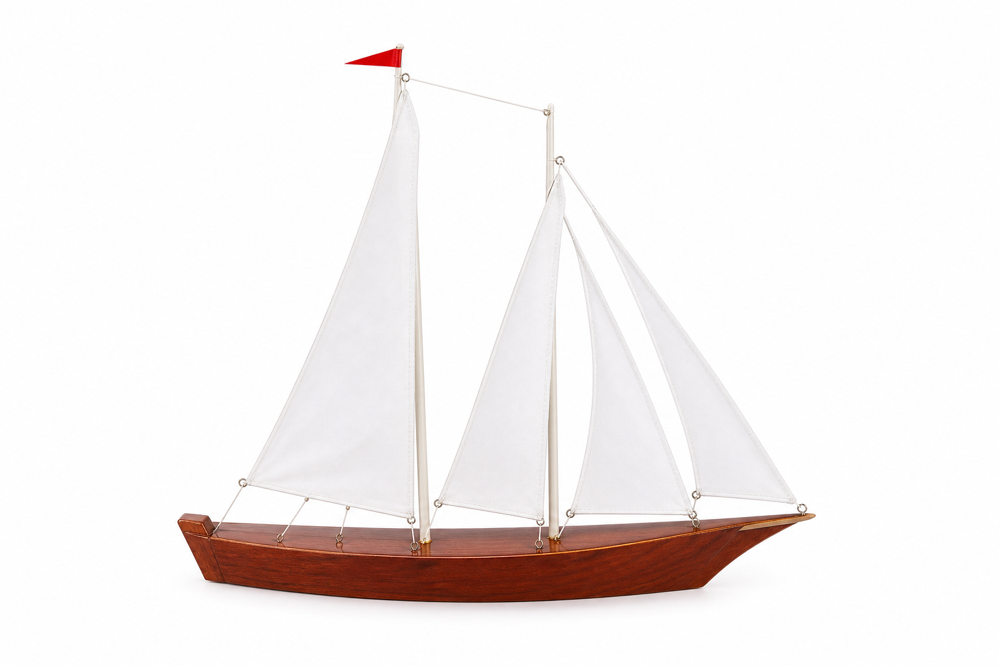
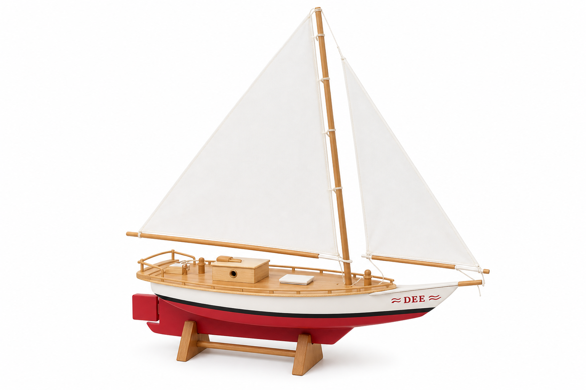
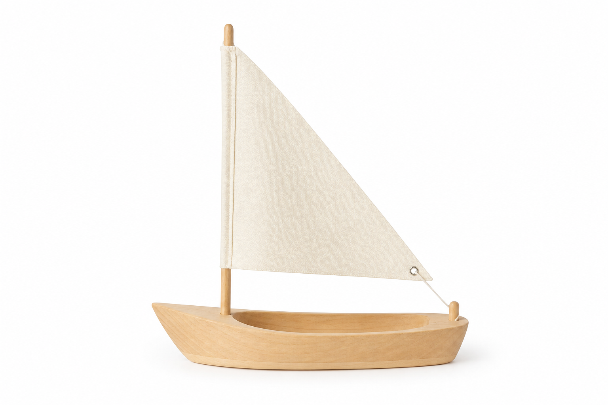

Boat Meshy reference images
Studio white background · ready for image-to-3D

Boat 1 — Simple wood sail boat (red mainsail, blue jib)

Boat 2 — Wood schooner (two masts, white sails)

Boat 3 — Variation (red/white DEE hull)

Boat 4 — Single sail (minimalist light wood)